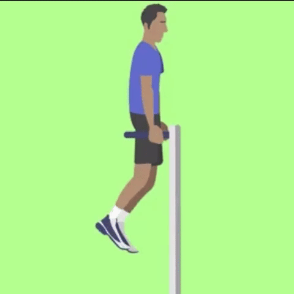
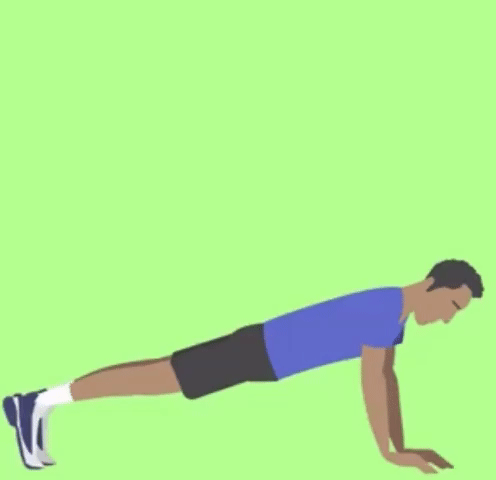
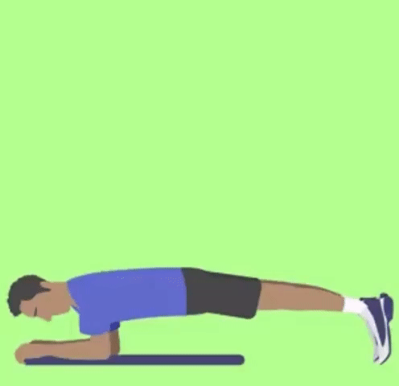
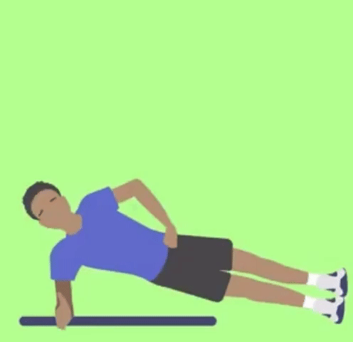
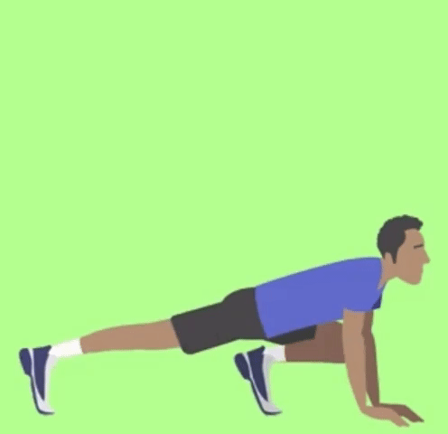

.png)
Roupa: Para praticar atividades físicas use roupas e calçados leves e confortáveis.

Nível de treinamento leve
Dicas e Precauções
Roupa
Vá com calma
Se estiver começando agora a prática de atividades vá aos poucos, sempre respeite os limites de seu corpo.
Hidrate-se
A ingestão de liquido deve repor a quantidade de líquidos que está indo embora pela transpiração. Sempre leve sua garrafa com água para beber nos intervalos do treino.
Contra indicações
Caso seja gestante, tenha se submetido a procedimentos cirúrgicos recentemente ou tenha algum problema de saúde como doenças cardiovasculares, diabetes, osteoporose, lesões musculoesquelética ou lesões nas articulações recomendamos que realize os exercícios apenas com o acompanhamento do profissional de educação física.
Aquecimento e Alongamento
Antes de iniciar qualquer exercício realize o alongamento e aquecimento do seu corpo para assim prepara-lo para receber os estímulos a seguir.
Exercícios
Escolha um tipo de exercicio: Aeróbico
Caminhada/Corrida
Não exige habilidades especificas. Você pode iniciar caminhando determinada distancia e aumenta-la ao decorrer da semana, por exemplo, nos 3 primeiros dias caminhe por 2 km, depois aumente para 4 km, 6 km e assim sucessivamente ate atingir seu objetivo diário (Ex. 10 km por dia). Se for iniciar com a corrida comece com o trote e va introduzindo a corrida aos poucos.
Benefícios: Melhora da circulação sanguínea diminuindo a pressão arterial, aumenta eficiência dos pulmões pois aumenta a troca gasosa isso faz com que uma quantidade maior de impurezas saia do pulmão, combate da osteoporose pois aumenta o estimulo elétrico que facilita a absorção de cálcio, combate a depressão pois é liberado maior quantidade do hormônio endorfina, emagrecer pois aumenta a demanda calórica, previne diabetes pois reverte a resistência à insulina;
Músculos trabalhados: Esta atividade trabalha os músculos de forma geral;
Ciclismo
Pedalar ajuda no fortalecimento muscular e perda de peso. Também é uma atividade que ajuda no alivio do estresse. Se a bike tiver regulagem de marcha você pode controlar a intensidade da atividade.
Assim como a caminhada e a corrida, você pode definir determinada distancia e ir aumentando gradativamente até alcançar seu objetivo diário.
Benefícios: Pedalar acelera o metabolismo, ou seja, a queima de calorias será mais rápida, melhora da resistência muscular, proporciona o bem estar pois aumenta a liberação de endorfinas e serotoninas, aumento do folego e fortalecimento dos pulmões, tem baixo impacto nas articulações, reduz o colesterol queimando mais rapidamente o colesterol ruim.
Importante: Sempre utilizar o equipamento de segurança (cotoveleiras, joelheiras, capacete e luvas).
Músculos trabalhados: Esta atividade trabalha os músculos de forma geral
Material: Bicicleta e equipamento de segurança.
Pular corda
Esta atividade além de ser aeróbica te ajudará a ganhar e melhorar a coordenação motora.
É importante observar e controlar o amortecimento quando retorna ao chão.
Sempre mantenha os braços firmes e o abdômen contraído. Para este treinamento você pode variar a velocidade da rotação da corda e ajustar o tempo da atividade.
Para iniciantes pode começar pulando por 5 minutos e ir aumentando o tempo gradativamente.
Benefícios: É uma atividade pratica e bastante completa que proporcionará tonificação da musculatura, melhora o condicionamento físico, queima calorias, desenvolve a coordenação motora, agilidade e equilíbrio e melhora a capacidade cardiorrespiratória.
Músculos trabalhados: Esta atividade trabalha os músculos de forma geral.
Material: Corda.
Patins
Esta pratica irá ajudar a tonificar as pernas, panturrilhas e glúteos e também proporcionará o gasto de calorias.
Além disso o passeio de patins pode proporcionar lazer e relaxamento.
Importante: Sempre utilizar o equipamento de segurança (cotoveleiras, joelheiras, capacete e luvas).
Benefícios: Por se tratar de uma atividade dinâmica requer que o músculos das coxas, panturrilhas, glúteos e abdômen. Também é um esporte de resistência isso estimula a queima de calorias e estimula todo o sistema cardiovascular, desenvolve os músculos do coração e melhora o fluxo sanguíneo, é um esporte de baixo impacto sendo menos traumático para as articulações, ajuda a desenvolver o senso de equilíbrio.
Músculos trabalhados: Esta atividade trabalha os músculos de forma geral, mais intensamente o grupo muscular dos membros inferiores (perna, glúteos e panturrilhas).
Material: Patins e equipamento de segurança.
Tipo de exercicio: Calistenia/Musculação
Importância da Calistenia/Musculação
A calistenia é a opção ideal para se adotar quando falamos de treinamentos em parques e ao ar livre pois é um conjunto de exercícios físicos onde se usa apenas o peso do próprio corpo. Procura movimentar grupos musculares grupos musculares de maneira natural sem utilização de halteres e similares. A calistenia desenvolve habilidades como força sobre o próprio corpo, equilíbrio, noção espacial e flexibilidade.
O treinamento calistênico possui movimentos básicos que podem ser adaptados para qualquer nível de aptidão física, o que torna o método bem democrático.
Barra fixa
- Pendure-se na barra com as mãos afastadas na largura dos ombros e as palmas viradas para a frente;
- Deixe as pernas cruzadas atrás do corpo;
- Contraia o abdômen, flexione os braços e suba até seu queixo ultrapassar a barra;
- Retorne devagar;
- Faça 3 séries de 10 repetições, com intervalo de 1 minuto entre elas (se achar difícil, pode dar uma pequena pausa entre as repetições, mas complete as 10 em cada série).
Músculos trabalhados: Costas, bíceps e abdômen.
Barra paralelas
- Segure nas barras paralelas com a palma de uma mão voltada para a outra;
- Estenda os braços e erga o corpo (essa é a posição inicial);
- Erga os pés para trás;
- Contraia o abdômen, flexione os braços e desça o corpo devagar, até seus cotovelos formarem um ângulo de 90 graus;
- Retorne à posição inicial;
- Faça 3 séries de 10 a 12 repetições, com 1 minuto de intervalo entre elas.
Músculos trabalhados: Tríceps, ombros, abdome e peito (dependendo da inclinação do tronco).

Flexão de Braço
- Apoie as mãos no chão, com os braços afastados na largura entre os ombros;
- Estenda as pernas para trás. É importante que seu corpo forme uma linha reta dos calcanhares até o pescoço;
- Contraia o abdome, flexione os braços e aproxime o peito do chão;
- Retorne à posição inicial;
- Faça três séries de 10 a 12 repetições. Se ficar difícil a execução, uma dica é apoiar os joelhos no chão ao fazer a flexão de braços.
Músculos trabalhados: Peito, ombros, tríceps e abdomen.

Prancha Abdominal
- Fique em posição de braços;
- Apoie os antebraços no chão, afastados na largura dos ombros;
- Deixe as pernas unidas;
- Seu corpo deve forma uma linha reta dos calcanhares ao pescoço;
- Contraia o abdome e fique nessa posição;
- Faça 3 séries de 30 segundos a 1 minuto (aumente o tempo quando ficar mais fácil), com intervalo de 1 minuto entre elas. Se o exercício estiver muito difícil, você pode separar as pernas ao fazer a prancha abdominal.
Músculos trabalhados: Abdome, lombar e quadril (região do core).

Prancha Lateral
- Deite-se de lado no chão;
- Apoie o antebraço no chão, com o cotovelo abaixo da linha do ombro;
- Levante o corpo de forma que fique somente apoiado em seus pés e antebraço;
- Contraia o abdome e permaneça estático na posição;
- Faça a prancha lateral por 30 segundos a 1 minuto de cada lado. Isso é 1 repetição. Realize 3, com intervalo de 1 minuto entre elas.
Músculos trabalhados: Abdominais, especialmente os oblíquos (na lateral da barriga).

Mountain Climber
- Fique em posição de flexão de braços;
- Contrai o abdome para estabilizar o corpo;
- Tire o pé esquerdo do chão e leve o joelho em direção ao peito, mantendo a perna direita estendida;
- Volte à posição inicial e repita com a perna direita. Isso é uma repetição;
- Alterne a posição das pernas rapidamente e execute esse movimento sem parar;
- Faça 3 séries de 10 a 12 repetições, com 1 minuto de descanso entre elas.
Músculos trabalhados: Região do core e pernas.

Agachamento
- Em pé, afaste as pernas em uma distância igual a dos ombros;
- Contraia o abdome, flexione os joelhos, leve o quadril para trás e agache até as coxas ficarem paralelas ao solo;
- Estenda as pernas e volte para posição inicial;
- Faça três séries de 10 a 12 repetições do agachamento, com intervalo de 1 minuto entre elas.
Burpee
- Fique em pé, com as pernas afastadas na largura do quadril e braços estendidos ao lado do corpo;
- Flexione os joelhos, agache e apoie as mãos no chão;
- Estenda as pernas para trás;
- Flexione os cotovelos e faça uma flexão de braços;
- Volte para a posição de agachamento, estenda as pernas e dê um salto, indo o mais alto que conseguir;
- Aterrisse já iniciando a próxima repetição. Procure executar a sequência de movimentos de forma contínua;
- Faça 3 séries de 10 a 12 repetições, com intervalo de 1 minuto entre elas. Se ficar muito difícil, não precisa dar o salto final.
Músculos trabalhados: Coxas, glúteos, panturrilha, tríceps, peito, abdome, ombros e posterior da coxa;